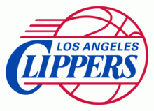
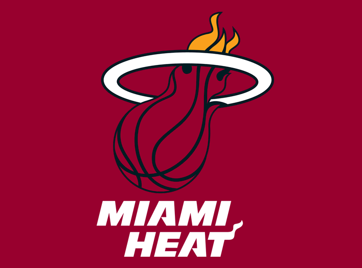

Sobre o time
Los Angeles Lakers é um time de basquetebol da NBA (National Basketball Association) com sede em Los Angeles, Califórnia.
A equipe foi fundada em 1947, em Minneapolis, onde recebeu seu nome em alusão ao fato do estado de Minnesota ser conhecido como "Terra dos Mil Lagos",e venceu cinco títulos da liga antes de uma queda de público presente levar a uma relocação para Los Angeles em 1960.
No fim dos anos 1970 e no começo dos anos 1980, a popularidade do Lakers cresceu, tornando-se uma das franquias de maior sucesso, além de ser a com maior número de títulos, 17, empatado com o Boston Celtics.
A equipe ainda conta com 56 aparições na pós-temporada, 33 títulos da Divisão do Pacífico e 32 títulos da Conferência Oeste.
A franquia californiana é detentora de alguns recordes da Liga. É a que possui maior número de vitórias da liga, mais de 3000,com a maior porcentagem de vitórias e mais aparições em finais (32).
O Lakers também é o time das ligas norte-americanas que mais teve vitórias consecutivas (33), na temporada 1971-72.

- 
- 